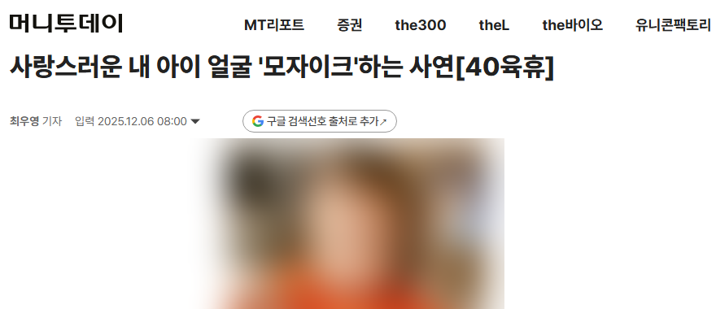
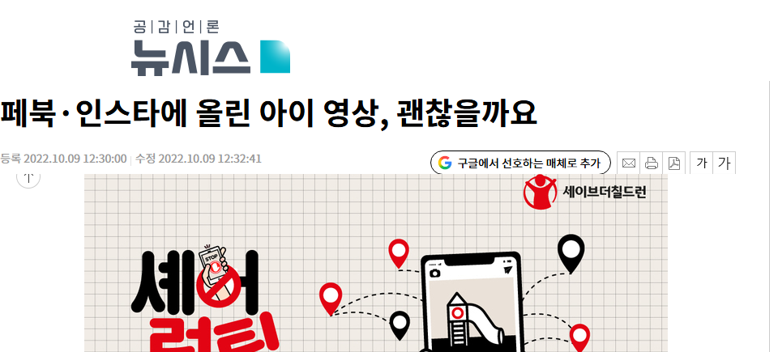
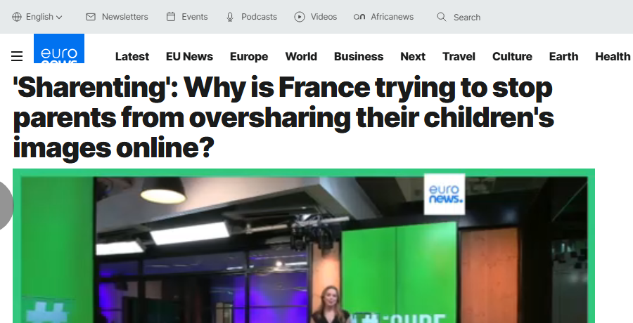
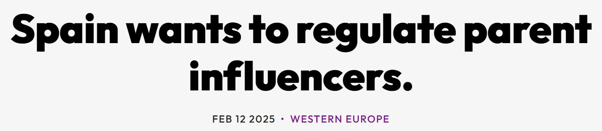

국내 뉴스
노컷뉴스 · 2023.7.15
머니투데이 · 2025.12.6

뉴시스 · 2022.10.9

해외 뉴스
프랑스 · 2023.3.10 → 2024.2 법 통과

이탈리아 · 2024.4.6
스페인 · 2025.2.12

86.1%
SNS를 하는 부모 중
아이 사진을 올린 비율
직접 인터뷰 · 인스타 DM육아·교육 인플루언서
"밖에서 찍은 영상 배경을 보고 '무슨 동네 사시네요' 같은 댓글이 달렸어요."